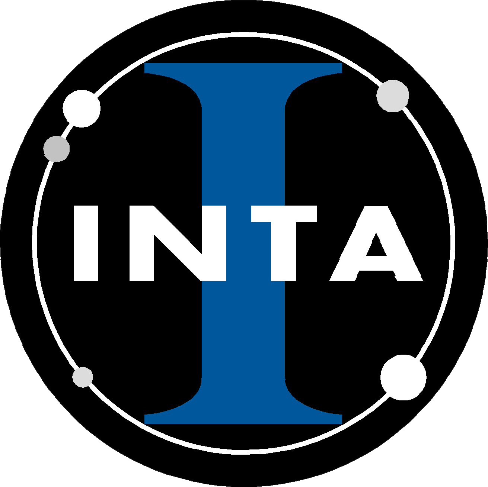

Portafolio Echa un vistazo a algunos de mis proyectos
Me gustaría presentarte algunos de las proyectos en los que he trabajado. Entre ellos encontrarás aplicaciones de Internet de las Cosas así como estudios de predicción y clasificación con algoritmos de Machine Leraning. No dudes en contactar conmigo para cualquier pregunta o sugerencia.
Sistema que monitoriza movimientos físicos de pacientes en rehabilitación y almacena los datos en la nube para la posterior evaluación del médico de forma remota.
Trabajo de Fin de Máster. Calificación: sobresaliente (9,5).
El abandono de clientes a otras compañias es un gran problema en la industria de las telecomunicaciones hoy en día. ... El mercado de las telecomunicaciones se expande día a día y las empresas se enfrentan a una grave pérdida de ingresos debido al aumento de la competencia, que proporciona a los clientes enormes incentivos para atraerlos a cambiar a sus servicios. Por ello las teleoperadoras están tratando de encontrar las razones de por las que sus clientes deciden irse a otras compañias.
El proceso de la teleoperadora para retener a los clientes rentables es de gran importancia, ya que adquirir un nuevo cliente es más costoso que retener a los existentes. Si se conocen las razones de los clientes del cambio a las otras compañias, los proveedores pueden mejorar sus servicios para satisfacer las necesidades de los clientes. Este es un conjunto de datos de Orange Telecom, que consiste en datos de actividad del cliente relacionados con llamadas, suscripciones a planes de llamadas y mensajes, etc., junto con una etiqueta que especifica si un cliente se fue de la compañía. En base a estas características, en este proyecto predecimos el abandono de clientes y arrojaremos luz sobre sus razones para tomar acciones preventivas.
Objetivo: Interpretación de las principales variables que provocan el abandono de clientes, de cara a elaborar planes estratégicos.
En este estudio de caso realizamos un modelo predictivo sobre las compras de un depósito a largo plazo de los clientes de un banco, con el objetivo de encontrar las mejores estrategias y orientar las campañas de marketing. .... El modelo consiste en una regresión logística. Los datos se han obtenido de un dataset clásico del Repositorio UCI Machine Learning relacionados con campañas directas de marketing de una institución bancaria portuguesa. Las campañas de marketing consistieron en llamadas telefónicas, recopilando datos sobre estas llamadas y la decisión final del cliente.
Objetivo: Predecir si el cliente de suscribirá (sí/no) al depósito a largo plazo, de cara a decisiones futuras.
¿Qué mejoras en nuestros hábitos son clave para maximizar nuestros logros? ¿Qué hábitos nos ayudan a combatir el exceso de estrés? ... En este proyecto realizamos un exhaustivo análisis exploratorio de los datos del dataset "Wellbeing and lifestyle data" sobre salud y bienestar. Si te interesa saber cómo puedes mejorar tu bienestar y ser más productivo en todos los ámbitos de tu vida te invito a echarle un vistazo al estudio.
Objetivo: Identificación de fuentes de estrés y de posibles factores clave para la consecución de logros.
Perfil
Soy Carlos España, físico y amante de la Electrónica y la Inteligencia Artificial, interesado en el uso de la tecnología para satisfacer necesidades humanas y del entorno. Cuento con un Máster en Nuevas Tecnologías Electrónicas y Fotónicas por la UCM y con conocimientos sobre distintas técnicas de Machine Learning. Me considero trabajador, meticuloso y con gran capacidad de aprendizaje.
Habilidades
Programación
Idiomas
Mis credenciales
Esta es mi formación y mi experiencia profesional hasta la fecha. Tras unos años como docente, decidí dedicarme a la rama de la física que siempre me había interesado: la electrónica.
Formación académica
Grado en Física Universidad Complutense de Madrid. 2016
Máster en Nuevas Tecnologías Electrónicas y Fotónicas Universidad Complutense de Madrid. 2023
Experiencia profesional

Practicante en Optoelectrónica. Instituto Nacional de Técnica Aeroespacial. 2023.
Participación en el desarrollo de un kit HW-SW para instrumentación de campo.
Docente de Educación Secundaria. Colegio San Pedro, Colegio Juan XXIII, Colegio Santa Susana, etc. 2018-2022.
Docente de Física y Química, Tecnología y Matemáticas en varios Colegios de Educación Secundaria entre los años 2018-2020 y 2021-2022.
Cursos
Machine Learning en Python Plataforma Udemy. 50h. 2020
Introducción a Tensorflow para Deep Learning Plataforma Udacity. 20h. 2020
Introducción a Machine Learning aplicado Plataforma Coursera - AMII. 5h. 2020
Análisis Exploratorio de Datos para Machine Learning Plataforma Coursera - IBM. 5h. 2020
Machine Learning Supervisado: Regresión Plataforma Udemy. 11h. 2021
Machine Learning Supervisado: Clasificación Plataforma Udemy. 11h. 2021
Formación complementaria
Inglés nivel C1.2 Centro Superior de Idiomas Modernos (CSIM) de la UCM. 2019
Otra Formación
Máster de Formación del Profesorado de ESO, Bachillerato, FP y enseñanza de idiomas Universidad Complutense de Madrid. 2018